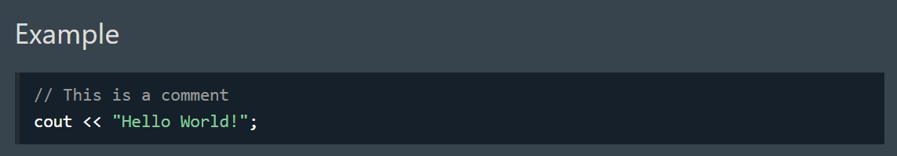
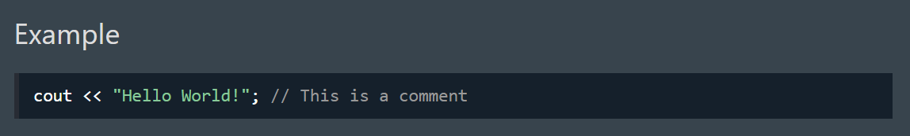
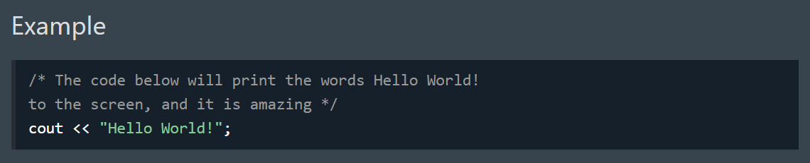

1) C++ Comments
Comments can be used to explain C++ code, and to make it more readable. It can also be used to prevent execution when testing alternative code. Comments can be singled-lined or multi-lined.
2) Single-line Comments
Single-line comments start with two forward slashes (//).
Any text between // and the end of the line is ignored by the compiler (will not be executed).
This example uses a single-line comment before a line of code:
This example uses a single-line comment at the end of a line of code:
3) C++ Multi-line Comments
Multi-line comments start with /* and ends with */.
Any text between /* and */ will be ignored by the compiler:
Single or multi-line comments?
It is up to you which you want to use. Normally, we use // for short comments, and /* */ for longer.